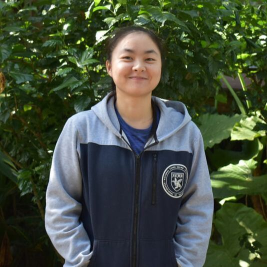

研究室主持人
莊汶博 Wen-Po Chuang
國立臺灣大學農藝學系 教授
農藝學系 系主任（2026–2028）
人工氣候室 主任（2026 起）
Email：wenpo@ntu.edu.tw
電話：(02) 3366-4790
研究室：臺大人工氣候室 202 室
臺大學術典藏 · Google Scholar · ORCID · 系網教師頁面
研究專長
作物抗蟲性、植物防禦機制、植物與昆蟲的交互作用
經歷
- 2026–2028
- 系主任，國立臺灣大學農藝學系
- 2026 至今
- 主任，國立臺灣大學人工氣候室
- 2024 至今
- 教授，國立臺灣大學農藝學系
國立臺灣大學植物醫學碩士學位學程 合聘教授
國立臺灣大學生態學與演化生物學研究所 合聘教授（2026 起） - 2020–2024
- 副教授，國立臺灣大學農藝學系
國立臺灣大學植物醫學碩士學位學程 合聘副教授 - 2014–2020
- 助理教授，國立臺灣大學農藝學系
- 2012–2014
- 博士後研究員，美國堪薩斯州立大學昆蟲學系
學歷
- 2006–2012
- 博士，美國賓州州立大學 作物與土壤科學系（農藝學）
- 1998–2002
- 學士，國立臺灣大學農藝學系
專業服務
- 國立臺灣大學進修推廣學院 講師（2014 起）
- 美國昆蟲學會國際分會（International Branch, ESA）獎項委員（2017 起）
- 農業部動植物防疫檢疫署 秋行軍蟲綜合管理 顧問（2019–2024）
- 亞太化學生態學會（APACE）理事（2020–2025）
- 國立臺灣大學農業推廣委員會 推廣教授（2021–2023）
- 教育部國民及學前教育署 全國高級中等學校農業類技藝競賽 命題暨評審委員（2021 起）
- 財團法人全國認證基金會（TAF）評鑑員（2021 起）
- 中華民國雜草學會 副秘書長（2023–2024）
- 第 26 屆國際植物抗蟲性研討會（IPRI2024）大會共同主席
榮譽
- 2025
- 中華民國雜草學會 學術獎
- 2023
- 楊尚發傑出青年科學家獎
- 2023
- 臺灣植物生物學會 傑出青年學者
- 2023
- 國立臺灣大學 傑出教學教師
開授課程
- AGRON 1005
- 作物生產概論
- AGRON 3001
- 作物學各論
- AGRON 3003
- 作物學實習
- AGRON 4001
- 作物生理學
- AGRON 5091
- 作物與昆蟲的交互作用
- AGRON 7034
- 作物生理學研究法
- MSPM 5002
- 經濟植物學
歡迎加入：
如果你對植物與昆蟲的交互作用有興趣，歡迎碩博士生、專題生來信洽詢：wenpo@ntu.edu.tw
如果你對植物與昆蟲的交互作用有興趣，歡迎碩博士生、專題生來信洽詢：wenpo@ntu.edu.tw
博士後研究員
研究助理
